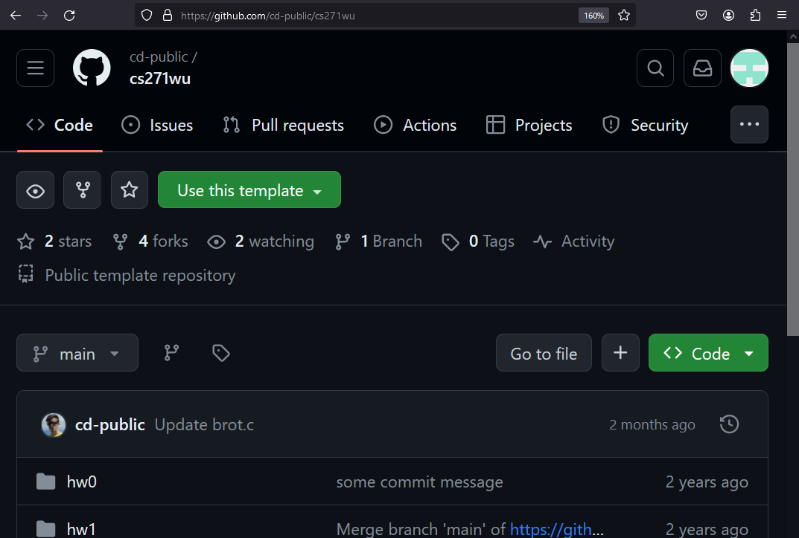

stdio
CS 271
Prof. Calvin
29 Jan 24
w02d00
Today
- hw0 staging
- git required
- gcc required
- Starting C
- Functions
- Variables/Types
- Arrays
- stdio
- Printing
Review
- Bash prompts users with a reminder about where they are in the filesystem.
user name @ device name : file system location $ user @ DESKTOP-THMS2PJ : ~ $ - "~" is where you usually start - short hand for the home directory of a given user.
user@DESKTOP-THMS2PJ:~$ mkdir dev user@DESKTOP-THMS2PJ:~$ cd dev user@DESKTOP-THMS2PJ:~/dev$ cd / user@DESKTOP-THMS2PJ:/$ cd /home/user/dev/ user@DESKTOP-THMS2PJ:~/dev$ pwd /home/user/dev user@DESKTOP-THMS2PJ:~/dev$ cd .. user@DESKTOP-THMS2PJ:~$ - These are all paths (file system locations):
- Special: "~" is special bash feature, used to refer to a user's home directory
- Relative path: "dev" it refers to the "dev" folder relative to the current path
- Absolute path"/home/user/dev" refers to one, specific path - from anywhere
- Absolute paths begin with "/" (also called "root"), relative paths do not.
Review
| Command | Action |
|---|---|
gcc |
Given an input .c file, compile the code. |
python3 |
Open the python3 interpreter. Given an input .py file, run that script. |
echo |
Given an input string, print that string. Can be used to write text into a file. |
cat |
Given an input file name, print the contents of that file. For "concatenate" - historically used to join multiple files together, but may be used on a single file. |
cd |
Change directory. If given no argument, return to ~. |
pwd |
Print working directory. Prints the full name of the current location in the file system. |
ls |
List. Lists all files and sub-directories in the current directory. |
Creating your repository
- For this class, you will make your own private repository from the files 271sp24.

- This can be done at command line or is browser, but we'll use browser for now.
- Click "Use this template"
- The url is https://github.com/cd-public/271sp24/
Creating your repository
- You must name your repository 271sp24 (convenience thing for me) - you can change post-semester.
- You must make your repository private.
- DO NOT CREATE A REPOSITORY THAT IS PUBLIC OR HAS ANY OTHER NAME

Add me
- Either click through settings or navigate to .../271sp24/settings/access
- "Add people"
- Add "cd-public" (that's me).
Add me
- Add "cd-public" (that's me).
- Once you send me an invite, send me an email from your @wu to my @wu telling me what you GitHub name is so I can put it in a spreadsheet.
FAQ
- I already forked 271sp24
- Delete and make a private repo (for portfolio reasons).
- I want to/did name it something else.
- Remake or rename. Grading is scripted. Following instructions is graded.
- It's not private.
- Google/Stack Overflow. You can toggle privacy for debug.
- I can't add you.
- Google/Stack Overflow
- How will you know it's me?
- You will email my @wu from your @wu with the repository name/link.
- How do I know it works?
- Change README and check.
- When I try to commit to README, my password won't show up.
- Correct.
- Snipped because these're questions covered last class - check the slides.
Once you commit a trivial change to this README, you have complete git setup.
- You may have to set up again if you set up in an environment with gcc support.
For hw0 you have to write some C.
- Once you have your own 271sp24, you should be able to compile the hw0 starting file "x_sort.c"
user@DESKTOP-THMS2PJ:~/dev/as_zagreb/271sp24/hw0$ gcc x_sort.c user@DESKTOP-THMS2PJ:~/dev/as_zagreb/271sp24/hw0$ ./a.out hello Keep it up! user@DESKTOP-THMS2PJ:~/dev/as_zagreb/271sp24/hw0$ - It will provide you the minimal non-zero feedback that you are not done yet ("Keep it up!").
- You will do your work for hw0 inside the "sort" function x_sort.c... but first some background.
Hello World
- New language, new hello.
- In notes or in hw0, let's make and play with a new .c file.
user@DESKTOP-THMS2PJ:~/dev/as_zagreb/271sp24/hw0$ touch test.c user@DESKTOP-THMS2PJ:~/dev/as_zagreb/271sp24/hw0$ - On Mac probably use atom or nano to edit.
user@DESKTOP-THMS2PJ:~/dev/as_zagreb/271sp24/hw0$ nano test.c user@DESKTOP-THMS2PJ:~/dev/as_zagreb/271sp24/hw0$ - On PC probably use (and set up) VS Code.
user@DESKTOP-THMS2PJ:~/dev/as_zagreb/271sp24/hw0$ code . user@DESKTOP-THMS2PJ:~/dev/as_zagreb/271sp24/hw0$ - On Linux I use gedit, but if you're on Linux you're also on your own.
- vim isn't required, but it'd be a lot funnier if it were.
Boilerplate
- As a starting C coder, I recommend starting *every* C project with following elements.
- You can treat this as boilerplate, but I will also tell you what it all means.
- When opening a new file, write:
// This test.c, a file for testing C. (or another description) #include <stdio.h> int main() { printf("test\n") ; return 0 ; }
Comments
- C, or more properly C99 (C standard revision 1999) has two main kinds of comments:
- Single line comments, that preface with double slashes "//"
- Multiline comments, that are prefaced and punctuated with "/*" and "*/ respectively.
int x = 0, y = 0, z = 0 ; x = 10 ; // x = 20 ; printf("%d", x) ; // Prints "10" y = 20 ; /* z = x * y ; x = x * z ; y = y * z ; */ printf("%d", y) ; // Prints "20"It is good practice to end every line of code you write with a "//" comment until you write code with no bugs on the first try at P > .5.
#include
- Read more.
- gcc and to my knowledge all C compilers utilize a "preprocessor" that runs over a .c file before attempting compilation.
- Lines of "code" prefixed with "#" are not C code specifically, but part of the C coding environment
- Conceptually somewhere between actual honest-to-goodness C and bash in terms of how "C" it is.
- The "#include" preprocessor directive instructors the compiler to include code from other sources while compiling, in such as the <stdio.h> library.
- Latter in the semester, we will use "#include" to make multi-file programs.
<stdio.h>
- The C print statement, "printf", is defined in <stdio.h>
- (Read: "Standard I/O" or "Standard Input/Output")
- If you don't include <stdio.h> but use printf, you will get this warning.
user@DESKTOP-THMS2PJ:~/dev/as_zagreb/271sp24/notes$ gcc test.c test.c: In function ‘main’: test.c:6:9: warning: implicit declaration of function ‘printf’ [-Wimplicit-function-declaration] 6 | printf("test\n") ; | ^~~~~~ test.c:1:1: note: include ‘<stdio.h>’ or provide a declaration of ‘printf’ +++ |+#include <stdio.h> 1 | // This test.c, a file for testing C. (or another description) test.c:6:9: warning: incompatible implicit declaration of built-in function ‘printf’ [-Wbuiltin-declaration-mismatch] 6 | printf("test\n") ; | ^~~~~~ test.c:6:9: note: include ‘<stdio.h>’ or provide a declaration of ‘printf’ user@DESKTOP-THMS2PJ:~/dev/as_zagreb/271sp24/notes$I will receive an alarming number of Discord messages containing warnings similar to this one. That is okay, but...
Let gcc help you
- Ahem
- As you were
user@DESKTOP-THMS2PJ:~/dev/as_zagreb/271sp24/notes$ gcc test.c
test.c: In function ‘main’:
test.c:6:9: warning: implicit declaration of function ‘printf’ [-Wimplicit-function-declaration]
6 | printf("test\n") ;
| ^~~~~~
test.c:1:1: note: include ‘<stdio.h>’ or provide a declaration of ‘printf’
+++ |+#include <stdio.h>
1 | // This test.c, a file for testing C. (or another description)
test.c:6:9: warning: incompatible implicit declaration of built-in function ‘printf’ [-Wbuiltin-declaration-mismatch]
6 | printf("test\n") ;
| ^~~~~~
test.c:6:9: note: include ‘<stdio.h>’ or provide a declaration of ‘printf’
user@DESKTOP-THMS2PJ:~/dev/as_zagreb/271sp24/notes$
gcc explicitly tells you what code to write and where. It is helping you!
Warnings
- Of note, these messages are warnings and not errors.
test.c:6:9: warning: implicit declaration of function ‘printf’ [-Wimplicit-function-declaration] 6 | printf("test\n") ; | ^~~~~~ - Code with warnings but no errors will compile, but may behave unpredictably or erratically.
- Code with errors will not compile and a new file to run, such as a.out, will not be created.
- You will compile code, get an error, ignore the error, and run an older version of your code and then become confused.
- You will ask for help and I or someone else will link this slide.
- Prove me wrong.
Implicit function declaration.
- Of note, these messages are warnings and not errors.
test.c:6:9: warning: implicit declaration of function ‘printf’ [-Wimplicit-function-declaration] 6 | printf("test\n") ; | ^~~~~~ - An "implicit function" declaration occurs when you call a function that you have not written or included.
- Review: What does it mean to call a function?
- The gcc "-w" flag will direct gcc not to print warnings.
- As a new programmer, you should aim to write code with no warnings or errors.
- You should use "-w" only as a tool to focus on errors before fixing warnings.
- Do not submit code to be graded with errors or warnings. Instead, reduce the scope of the code until you can do what you are trying to do without any errors or warnings.
Boilerplate
- As a starting C coder, I recommend starting *every* C project with following elements.
- You can treat this as boilerplate, but I will also tell you what it all means.
- When opening a new file, write:
// This test.c, a file for testing C. (or another description) #include <stdio.h> // for printf int main() { printf("test\n") ; return 0 ; }
main()
- Recall: C is not a programming language.
- By default, lines of C code are not run unless called.
- The C compiler looks for a function named exactly main, and produces an executable (a program) that calls this function.
- The only code in a C file that runs is main(), and the code it calls.
- Test this: Write C code with no main().
// This test.c, a file for testing C. (or another description) #include <stdio.h> // for printf int notmain() { printf("test\n") ; return 0 ; }
main()
- No main no gain.
user@DESKTOP-THMS2PJ:~/dev/as_zagreb/271sp24/notes$ gcc test.c /usr/bin/ld: /usr/lib/gcc/x86_64-linux-gnu/11/../../../x86_64-linux-gnu/Scrt1.o: in function `_start': (.text+0x1b): undefined reference to `main' collect2: error: ld returned 1 exit status - As in you do not gain an a.out.
user@DESKTOP-THMS2PJ:~/dev/as_zagreb/271sp24/notes$ ls test.c user@DESKTOP-THMS2PJ:~/dev/as_zagreb/271sp24/notes$ - Note: That is error. Not a warning.
- Review: What is the difference between errors and warnings?
- Review: "ld" is two characters... what does that tell us about the history of "ld"?
main()
- You can also try writing lines of C with no enclosing function.
#include <stdio.h> // for printf printf("test\n") ; - This is fine in Python (this would be a script) but this does not constitute a program.
user@DESKTOP-THMS2PJ:~/dev/as_zagreb/271sp24/notes$ gcc test.c test.c:3:8: error: expected declaration specifiers or ‘...’ before string constant 3 | printf("test\n") ; | ^~~~~~~~ user@DESKTOP-THMS2PJ:~/dev/as_zagreb/271sp24/notes$ - Note: That is error. Not a warning.
int main()
- You can give main return types other than int.
user@DESKTOP-THMS2PJ:~/dev/as_zagreb/271sp24/notes$ echo "int main() {return 0;}" >test.c && gcc test.c && ./a.out user@DESKTOP-THMS2PJ:~/dev/as_zagreb/271sp24/notes$ echo "void main() {return;}" >test.c && gcc test.c && ./a.out user@DESKTOP-THMS2PJ:~/dev/as_zagreb/271sp24/notes$ echo "char *main() {return \"hi\";}" >test.c && gcc test.c && ./a.out user@DESKTOP-THMS2PJ:~/dev/as_zagreb/271sp24/notes$ echo "string main() {return 0;}" >test.c && gcc test.c && ./a.out test.c:1:1: error: unknown type name ‘string’ 1 | string main() {return 0;} | ^~~~~~ user@DESKTOP-THMS2PJ:~/dev/as_zagreb/271sp24/notes$ - Use "&&" to run multiple commands or utilities in a single line.
int main()
- We use int main() and int main() only because C++ requires int main() and you might want to
user@DESKTOP-THMS2PJ:~/dev/as_zagreb/271sp24/notes$ echo "int main() {return 0;}" >test.c && g++ test.c && ./a.out user@DESKTOP-THMS2PJ:~/dev/as_zagreb/271sp24/notes$ echo "void main() {return;}" >test.c && g++ test.c && ./a.out test.c:1:1: error: ‘::main’ must return ‘int’ 1 | void main() {return;} | ^~~~ test.c: In function ‘int main()’: test.c:1:14: error: return-statement with no value, in function returning ‘int’ [-fpermissive] 1 | void main() {return;} | ^~~~~~ user@DESKTOP-THMS2PJ:~/dev/as_zagreb/271sp24/notes$ - That's right, by using g++ instead of gcc you now know C++ (well you don't know C, but you will).
return 0 ;
- Remember this?
user@DESKTOP-THMS2PJ:~/dev/as_zagreb/271sp24/notes$ gcc test.c /usr/bin/ld: /usr/lib/gcc/x86_64-linux-gnu/11/../../../x86_64-linux-gnu/Scrt1.o: in function `_start': (.text+0x1b): undefined reference to `main' collect2: error: ld returned 1 exit status - "error: ld returned 1 exit status"
- Historically, return values from executables other than 0 have denoted error conditions.
- Return 0 from your executables for compatability with other code respecting this convention.
exit(1) ;
- You do not need to know this yet, but you may look back at these slides.
- This is how you return with 1 exit status:
#include <stdio.h> // for printf #include <stdlib.h> // for exit int main() { if (0) { exit(1) ; } printf("test\n") ; return 0 ; } - This will be useful at some point this semester (network programming).
Boilerplate
- As a starting C coder, I recommend starting *every* C project with following elements.
- You can treat this as boilerplate, but I will also tell you what it all means.
- When opening a new file, write:
// This test.c, a file for testing C. (or another description) #include <stdio.h> // for printf int main() { printf("test\n") ; return 0 ; }
printf
- The built-in C print function is a format print function.
- Note: C printf() does not have a built-in newline - Python print() does!
- This exists in Python but is relatively unpopular as far as I've seen:
txt = "For only {price:.2f} dollars!" print(txt.format(price = 49)) - That's a w3 rip because I have never actually written a line of Python code in my life.
- Here's what it looks like with no formatting elements applied:
>>> txt = "hello there" >>> print(txt.format()) hello there >>> print("hello there".format()) hello there >>> - That's basically printf("hi") - a format print with no formatting.
printf
- Here's a non-trivial format print.
- This exists in Python but is relatively unpopular as far as I've seen:
#include <stdio.h> // for printf int main() { int rval = 0 ; // for "return value" printf("rval = %d\n", rval) ; return rval ; } - "d" here stands for decimal, which is for integers printed in base 10.
- Usually you'll use %d for numerical data, but not always.
user@DESKTOP-THMS2PJ:~/dev/as_zagreb/271sp24/notes$ gcc test.c && ./a.out rval = 0 user@DESKTOP-THMS2PJ:~/dev/as_zagreb/271sp24/notes$ - Most of the Python format tech you know will apply either directly or via Stack Overflow/ChatGPT translation.
Boilerplate
- As a starting C coder, I recommend starting *every* C project with following elements.
- You can treat this as boilerplate, but I will also tell you what it all means.
- When opening a new file, write:
// This test.c, a file for testing C. (or another description) #include <stdio.h> // for printf int main() { printf("test\n") ; return 0 ; } - Easy right? Moving on.
Today
- ✓ hw0 staging
- ✓ git required
- ✓ gcc required
- Starting C
- Functions
- Variables/Types
- Arrays
- ✓ stdio
- ✓ Printing
Starting C
- In Python, everything is an object.
- Strings, integers, floats, dictionaries, files.
- Objects tend to be able to tell you what kind of thing they are.
>>> txt = "hello there" >>> print(txt.format()) hello there >>> print("hello there".format()) hello there >>> type(txt) <class 'str'> >>> type(print) <class 'builtin_function_or_method'> >>> type(print(txt)) hello there <class 'NoneType'> >>> - In Python, any line of code is ultimately going to be some kind of object.
C Types
- In C, there are no objects
- To keep track of what is happening, we have to label everything with a type.
- Types tell the compiler how many bits 'n bytes to set aside for result of a computation.
- int main() tells the compiler how many bits to tell the computer to expect.
user@DESKTOP-THMS2PJ:~/dev/as_zagreb/271sp24/notes$ echo "int main() {return 0;}" >test.c && gcc test.c && ./a.out user@DESKTOP-THMS2PJ:~/dev/as_zagreb/271sp24/notes$ echo "void main() {return;}" >test.c && gcc test.c && ./a.out user@DESKTOP-THMS2PJ:~/dev/as_zagreb/271sp24/notes$ echo "int main() {return;}" >test.c && gcc test.c && ./a.out test.c: In function ‘main’: test.c:1:13: warning: ‘return’ with no value, in function returning non-void 1 | int main() {return;} | ^~~~~~ test.c:1:5: note: declared here 1 | int main() {return;} | ^~~~ user@DESKTOP-THMS2PJ:~/dev/as_zagreb/271sp24/notes$ - We can return any size or type of thing, but we have to say what we're doing - and actually do that.
Variables
- In Python, when we want a variable, we just assign a label to an object with "="
- Read "single equals"
- If you like it then you should've put a ring on it equals.
- For now, that's either int (number) or char * (string, more or less).
- I say "int" and "character star", "char star", or "character pointer"
- Star means "pointer" - more on that someday^TM
int main() { int rval = 0 ; // variable for a number // variables for strings, more or less char *str0 = "If thou dost appreciate/" ; char *str1 = "Then thine shalt place/" ; char *str2 = "Yon jewel upon/" ; char *str3 = "Ye olde fingere." ; return rval ; } - You can translate a Python variable assignment to C by specifying a type and punctuating with a semicolon.
Python bad
- People are allowed to like things, so you are allowed to like this.
- I don't.
>>> x, y, s, t = 1, 2, "h", "i" >>> x + y 3 >>> x + s Traceback (most recent call last): File "<stdin>", line 1, in <module> TypeError: unsupported operand type(s) for +: 'int' and 'str' >>> s + t 'hi' >>> - This is called operator overloading. It's not allowed in C.
C Good
- You honestly mean to tell me "one" + "two" should be "onetwo" and not "three"?
- If you try to add strings together, gcc tells you to to rethink your decisions.
int main() { char *str0 = "If thou dost appreciate/" ; char *str1 = "Then thine shalt place/" ; printf(str0 + str1) ; return 0 ; } - Thanks, C.
user@DESKTOP-THMS2PJ:~/dev/as_zagreb/271sp24/notes$ gcc test.c ; ./a.out test.c: In function ‘main’: test.c:16:17: error: invalid operands to binary + (have ‘char *’ and ‘char *’) 16 | printf(str0 + str1) ; | ^ user@DESKTOP-THMS2PJ:~/dev/as_zagreb/271sp24/notes$ - What does "binary" mean here? (Hint: MATH 251W)
Functions
- In C, the function "+" has a fixed type - it accepts two numbers, and returns a number.
- In arithmetic, "+" is commonly used as an infix operator.
- For a trivial example, let's write "add()" - a prefix integer addition function.
- Why might we want this?
- What does infix mean?
- What does prefix mean?
- What does operator mean?
int add(int x, int y) { return x + y ; } - We can write this in Python too of course.
>>> def add(x:int,y:int) -> int: ... return x + y ... >>> - In C, giving a non-integer x with raise a compiler warning.
- In Python, the types are ignored by the runtime.
- Python bad! C good!
Return Types
- In C, functions have exactly one return type.
- C functions are declared the same way as variables...
- However, they are not assigned using single equals.
- C is an imperative (command) based language!
- Instead, they are defined by creating a code block of commands.
- C code blocks are enclosed in these lil squigglers -> {}
- C functions may have an arbitrary number of arguments...
- However, each argument must have, itself, exactly one type.
int add(int x, int y) { return x + y ; } int main() { return add(0,0) ; } - Instead of saying "I'm stuck"/"I don't know" say "Wow I would love to think about types rn fr fr".
Python bad
- My favorite thing is just slamming down a comma in the middle of my unpunctuated return statements surrounded by whitespace.
- Wait no it's not,
>>> def both(x,y): ... return x, y ... >>> both(1, "1") (1, '1') >>> - It should be against the law to write code like this and it is, this is only allowed in scripts*
- *That's not true at all but it'd be cool if it were.
- Also Python just swapping double quotes for single quotes...
C Good
- C will warn for type based shenanigans at compile time...
- If you try to add strings together, gcc tells you to to rethink your decisions.
user@DESKTOP-THMS2PJ:~/dev/as_zagreb/271sp24/notes$ gcc test.c ; ./a.out test.c: In function ‘main’: test.c:21:16: warning: passing argument 1 of ‘add’ makes integer from pointer without a cast [-Wint-conversion] 21 | printf(add(str1,str0)) ; | ^~~~ | | | char * test.c:12:13: note: expected ‘int’ but argument is of type ‘char *’ 12 | int add(int x, int y) | ~~~~^ test.c:21:21: warning: passing argument 2 of ‘add’ makes integer from pointer without a cast [-Wint-conversion] 21 | printf(add(str1,str0)) ; | ^~~~ | | | char * test.c:12:20: note: expected ‘int’ but argument is of type ‘char *’ 12 | int add(int x, int y) | ~~~~^ test.c:21:12: warning: passing argument 1 of ‘printf’ makes pointer from integer without a cast [-Wint-conversion] 21 | printf(add(str1,str0)) ; | ^~~~~~~~~~~~~~ | | | int In file included from test.c:1: /usr/include/stdio.h:356:43: note: expected ‘const char * restrict’ but argument is of type ‘int’ 356 | extern int printf (const char *__restrict __format, ...); | ~~~~~~~~~~~~~~~~~~~~~~~^~~~~~~~ test.c:21:5: warning: format not a string literal and no format arguments [-Wformat-security] 21 | printf(add(str1,str0)) ; | ^~~~~~ Segmentation fault user@DESKTOP-THMS2PJ:~/dev/as_zagreb/271sp24/notes$ - Thanks, C.
user@DESKTOP-THMS2PJ:~/dev/as_zagreb/271sp24/notes$ gcc test.c ; ./a.out test.c: In function ‘main’: test.c:16:17: error: invalid operands to binary + (have ‘char *’ and ‘char *’) 16 | printf(str0 + str1) ; | ^ user@DESKTOP-THMS2PJ:~/dev/as_zagreb/271sp24/notes$ - What does "binary" mean here? (Hint: MATH 251W)
C Good
- C will warn for type based shenanigans at compile time...
- If you try to add strings together, gcc tells you to to rethink your decisions.
- If you run the code anyways, the operating system will neutralize the process as soon it reaches the shenanigans.
user@DESKTOP-THMS2PJ:~/dev/as_zagreb/271sp24/notes$ ./a.out Segmentation fault user@DESKTOP-THMS2PJ:~/dev/as_zagreb/271sp24/notes$ - Thanks, C and also thanks Linux kernel (the OS that stops this).
- Segmentation faults are a recurring source of frustration for learning C programmers, but that frustrating you feel is called "learning" and is good for you, I think.
- Back in my day after a segmentation fault we had to change the tapes in our Turing machines by hand.
- Next time you have 7 hours to waste ask me about Turing machines.
Arrays
- In Python, we don't really have the classical concept of array
- Historically lists and arrays were different things...
- Python lists are closer to being array-lists - an implementation of a list *abstract data type* using an array *data structure*
>>> arr = [1,2,3] >>> type(arr) <class 'list'> >>> - The List type differs from the Array implementation in a few ways:
- Arrays are of fixed length.
- We cannot add or remove elements, only replace.
- Arrays must contain only elements of the same type.
- We cannot place chars and ints in the same array.
- Arrays do not know their own length or type.
- When using arrays, we must keep track of how many elements of what type there are.
- Arrays exist at fixed location in physical memory.
- This will matter more latter.
- Arrays are of fixed length.
- Let's see some arrays.
Arrays
- In C, we create an array by creating a variable as we do any other variable.
- We declare the type.
- We give a name.
- We optionally assign a value.
- For arrays specifically, we use boxy bracket "[]" notation to give the length of the array.
- We provide a length whenever we declare a new array variable.
- We use the same notation to access elements of the array, indexed by zero.
int main() { int arr[3] = { 1, 2, 3 } ; arr[0] = arr[0] - 1 ; return arr[0] ; }
Arrays
- We can create arrays of ints or of chars.
- Or of anything else.
- We've actually worked with arrays of characters already...
int main() { char arr[4] = "hi\n\0" ; printf("%s", arr) ; return 0 ; } - We can write this using the same notation as our int arrays.
int main() { char arr[4] = { 'h', 'i', '\n', 0 } ; printf("%s", arr) ; return 0 ; } - Check-in: What would you expect (Python) ord('\0') to be?
"%c, %d"
- As you theoretically know from CS 151, a character is just a number in ℤ256
- In Python we use "ord" and "chr"
- In C, this abstraction doesn't exist - we just have a value in ℤ256
- We can view the character value with "%c" and the numerical value with "%d"
int main() { char arr[4] = { 'h', 'i', '\n', 0 } ; printf("c = %c, d = %d\n", arr[0], arr[0]) ; return 0 ; } - This prints the ascii character and the character value.
user@DESKTOP-THMS2PJ:~/dev/as_zagreb/271sp24/notes$ gcc test.c ; ./a.out c = h, d = 104 user@DESKTOP-THMS2PJ:~/dev/as_zagreb/271sp24/notes$ - It isn't the case in C that a char is either a printable ascii character or a numerical value, rather it is simply 8 bits or 1 byte of data, and how that data is interpreted is determined by the programmer and respected by the compiler.
'\0'
- As noted previously, arrays in C do not store their own length.
- This is variously regarded as "kinda annoying" or "the worst thing ever".
- You may have noticed you know Python.
- C... bad???
- For strings, C uses "null-termination":
- Every string is stored in an array of characters of length at least one greater than the string length.
- After the final character of the string, a single non-printing '\0' or 0 character is added.
- Built-in C functions respect null termination, and the compiler implements null-termination automatically.
- When declaring arrays, we must provide the null-termination*
- In practice, modern compilers don't trust you and will often do this for you.
- This good and bad news - it may mask errors that should've found earlier, but makes quick coding easier.
- While '\0' is simply 0, I will refer to it *when used in C strings* as "the null terminator" to be clear what I am talking about abstractly.
- To C, '\0' == 0 but to me, these mean different things.
char arr[4] = { 'h', 'i', '\n', '\0' } ; // Don't mix ascii and numericals.
- To C, '\0' == 0 but to me, these mean different things.
'h' and "h"
- In Python, single and double quotes are equivalent or something.
- This is variously regarded as "kinda annoying" or "the worst thing ever".
>>> 'h' == "h" True >>> - Python... bad???
- C uses single quotes for characters and double quotes for strings.
'h' and "h"
- C uses single quotes for characters and double quotes for strings. Try it:
int main() { char arr[4] = { "h", "i", "\n", "\0" } ; return 0 ; } - Compiler blocks this with a series of errors:
user@DESKTOP-THMS2PJ:~/dev/as_zagreb/271sp24/notes$ gcc test.c test.c: In function ‘main’: test.c:19:30: error: excess elements in ‘char’ array initializer 19 | char arr[4] = { "h", "i", "\n", "\0" } ; | ^~~ test.c:19:30: note: (near initialization for ‘arr’) test.c:19:35: error: excess elements in ‘char’ array initializer 19 | char arr[4] = { "h", "i", "\n", "\0" } ; | ^~~~ test.c:19:35: note: (near initialization for ‘arr’) test.c:19:41: error: excess elements in ‘char’ array initializer 19 | char arr[4] = { "h", "i", "\n", "\0" } ; | ^~~~ test.c:19:41: note: (near initialization for ‘arr’) user@DESKTOP-THMS2PJ:~/dev/as_zagreb/271sp24/notes$ - Every string is stored in an array of characters of length at least one greater than the string length.
- After the final character of the string, a single non-printing '\0' or 0 character is added.
- Built-in C functions respect null termination, and the compiler implements null-termination automatically.
- When declaring arrays, we must provide the null-termination*
- In practice, modern compilers don't trust you and will often do this for you.
- This good and bad news - it may mask errors that should've found earlier, but makes quick coding easier.
- While '\0' is simply 0, I will refer to it *when used in C strings* as "the null terminator" to be clear what I am talking about abstractly.
- To C, '\0' == 0 but to me, these mean different things.
>>> 'h' == "h" True >>>
- To C, '\0' == 0 but to me, these mean different things.
sizeof()
- I keep talking about numbers of bits and bytes. Well, there's a way to measure that.
- gcc, and to my knowledge every C compiler, has a "sizeof()" operator
- sizeof isn't really part of C the way #include isn't, but it's part of the C ecosystem.
- When you write C code, before it is compiled, the preprocessor will go through and replace every sizeof() with the number of bytes the compiler will use.
- This is helpful for a lot of reasons, but especially helpful to learn about the language.
int main() { printf("ints are %d big\n", sizeof(int)) ; return 0 ; }
sizeof()
- There's only one little wrinkle to work out.
user@DESKTOP-THMS2PJ:~/dev/as_zagreb/271sp24/notes$ gcc test.c ; ./a.out test.c: In function ‘main’: test.c:14:27: warning: format ‘%d’ expects argument of type ‘int’, but argument 2 has type ‘long unsigned int’ [-Wformat=] 14 | printf("ints are %d big\n", sizeof(int)) ; | ~^ ~~~~~~~~~~~ | | | | int long unsigned int | %ld ints are 4 big user@DESKTOP-THMS2PJ:~/dev/as_zagreb/271sp24/notes$ - sizeof() doesn't run an int or a char, it returns a special, other thing.
- gcc says use %ld (long decimal, for things bigger than ints) so we do so.
sizeof()
- There's only one little wrinkle to work out.
int main() { printf("longs are %ld big, ints are %ld big, chars are %ld big\n", sizeof(long unsigned int), sizeof(int), sizeof(char)) ; return 0 ; } - This tells us how big a long unsigned int is (but not *what* it is).
user@DESKTOP-THMS2PJ:~/dev/as_zagreb/271sp24/notes$ gcc test.c ; ./a.out longs are 8 big, ints are 4 big, chars are 1 big user@DESKTOP-THMS2PJ:~/dev/as_zagreb/271sp24/notes$ - Incidentally, it also tells us the measurement - we measure things in terms of how much bigger they are than char.
char *
- Back to arrays.
- Students commonly think "ah ha, I can use sizeof() to not have to learn to program, I mean, to program efficently and well just like in Python, and not track what size arrays are."
- Kinda.
- First of all note we have not used sizeof() on variables, only on types so far.
- That said, we can use it on variables too, but should be careful.
int main() { char *str = "hello\n" ; printf("str is of size %ld\n", sizeof(str)) ; return 0 ; } - Surely this will tell me that the string "hello\n" has 6 characters in it. Right? RIGHT????
user@DESKTOP-THMS2PJ:~/dev/as_zagreb/271sp24/notes$ gcc test.c ; ./a.out str is of size 8 user@DESKTOP-THMS2PJ:~/dev/as_zagreb/271sp24/notes$ - Sizeof is not telling you how big of an array you have.
sizeof()
- Wait a minute - char * is the same size as the thing we print with %ld.
int main() { char *str = "hello\n" ; printf("%ld\n", str) ; return 0 ; }
sizeof()
- We get a warning but we also get a value.
- "str" is "94293169704970".
- If you go to stack overflow with this error, it will probably tell you to use "%p" which removes the error but prints in hexadecimal instead of decimal.
user@DESKTOP-THMS2PJ:~/dev/as_zagreb/271sp24/notes$ gcc test.c ; ./a.out 0x55b0a9ec000a user@DESKTOP-THMS2PJ:~/dev/as_zagreb/271sp24/notes$
user@DESKTOP-THMS2PJ:~/dev/as_zagreb/271sp24/notes$ gcc test.c ; ./a.out
test.c: In function ‘main’:
test.c:16:19: warning: format ‘%ld’ expects argument of type ‘long int’, but argument 2 has type ‘char *’ [-Wformat=]
16 | printf("%ld\n", str) ;
| ~~^ ~~~
| | |
| | char *
| long int
| %s
94293169704970
char *
- Takeaway: char *str or char arr[3] are different kinds of things that characters.
- They are pointers - the locations of a series of adjacent characters in computer memory.
- A character is a value
- A character pointer is the address of a character, and this character itself has a value.
- We can use this to write non-format print.
void print(char *str) { printf("%s\n", str) ; // add newline a la python return ; } int main() { char arr[6] = { 'h', 'e', 'l', 'l', 'o', '\0' } ; // no newline print(arr) ; return 0 ; }
char *
- We use char * in the function argument to account for arrays of any size.
- We use char arr[6] in the main function so we know we have enough space.
- The compiler helps us a lot here - this is sloppy, but good enough to learn from and won't draw any errors.
user@DESKTOP-THMS2PJ:~/dev/as_zagreb/271sp24/notes$ gcc test.c ; ./a.out hello user@DESKTOP-THMS2PJ:~/dev/as_zagreb/271sp24/notes$
Today
- ✓ hw0 staging
- ✓ git required
- ✓ gcc required
- ✓ Starting C
- ✓ Functions
- ✓ Variables/Types
- ✓ Arrays
- ✓ stdio
- ✓ Printing
Fact Check
- Pretty sure teaching arrays without teaching loops is bad.
- We'll do while and if and save for for latter
- for for latter kneeslap
- While and for are control flow statements, and in this respect are like functions.
- We will use them with squiglers, indentation, and newlines
void print(char *str) { int i = 0 ; // i for iterator, by overwhelming convention while (str[i]) // that is, while str[i] != '\0' - see why its zero now? { printf("%c", str[i]) ; // or use putchar() i++ ; // logically equivalent to i = i + 1 } printf("\n") ; // add newline a la python return ; }
Initialization
- while loops do not always require initialization, it is common to do so
- This allows running some fixed number of loops, walking down an array, etc.
int i = 0 ; - Adopting a coding style utilizing "i" will probably make reading other people's code easier.
- You probably always do this.
- Like etc etc, int i = 0 ; is not part of the while loop, but part of the while loop ecosystem.
Declaration
- while loops are defined using the while keyword applied to a parenthetical expression that is tested against zero.
- This coding style is a historical reason for null-terminated strings and vice versa.
while (str[i]) - While learning, you might want to be more explicit in your code:
while (str[i] != '\0') - Being explicit is often logically equivalent, and the same speed or not much slower.
- Being explicit may introduce more typing and can lead to more errors on that end.
- Optimize your coding style to minimize errors.
- It is legal to inline loops but can be hard to read.
while (str[i++]) {putchar(str[i]);} - You can write code like that as soon as you can tell me what it's doing!
Iteration
- C programmers (you) love to write infinite loops than gasp when they are infinite.
- This was the first thing I wrote:
void print(char *str) { int i = 0 ; // i for iterator, by overwhelming convention while (str[i]) // that is, while str[i] != '\0' - see why its zero now? { printf("%c", str[i]) ; // or use putchar() } printf("\n") ; // add newline a la python return ; } - Wow that sure looks like it'd work in Python (it will work in a for loop).
- C affords us an extremely cool unary iteration operator to help us remember to have a good time.
i++ ; - This just means "increase i by 1" but is much shorter and...
while (str[i++]) {putchar(str[i]);} - Can be included in other lines so you can write crisper loops.
While Boilerplate
- You will not always need all of these elements.
void print(char *str)
{
int i = 0 ; // initialization
while (str[i]) // declaration
{
printf("%c", str[i]) ; // computation
i++ ; // iteration
}
printf("\n") ; // termination
return ;
}
If Boilerplate
- if is the trivial case of while.
void pos(int val) { if (val > 0) // declaration { printf("pos\n") ; // computation return ; } printf("neg\n") ; // termination return ; } - You will not always need all of these elements.
If Boilerplate
- if also supports while, if (kneeslap) you are into that.
void pos(int val) { if (val > 0) // declaration { printf("pos") ; // computation } else { // declaration printf("neg") ; // computation } printf("\n") ; // termination return ; } - You will not always need all of these elements.
Lab Time
- Do hw0.
- "I did" -> Ensure your solution is nlog(n) complexity
- "I did" -> Implement it using radix sort
- "I did" -> Implement it recursively using bitwise operators
- "What's that?" -> Google.
- "I did" -> Implement it recursively using bitwise operators
- "I did" -> Implement it using radix sort
- "I did" -> Ensure your solution is nlog(n) complexity
- Submit on GitHub.
- "I did" -> Ensure your code is adequately documented.
- "I did" -> Ensure your version control is adequately documented.
- "I did" -> Ensure your code is adequately documented.